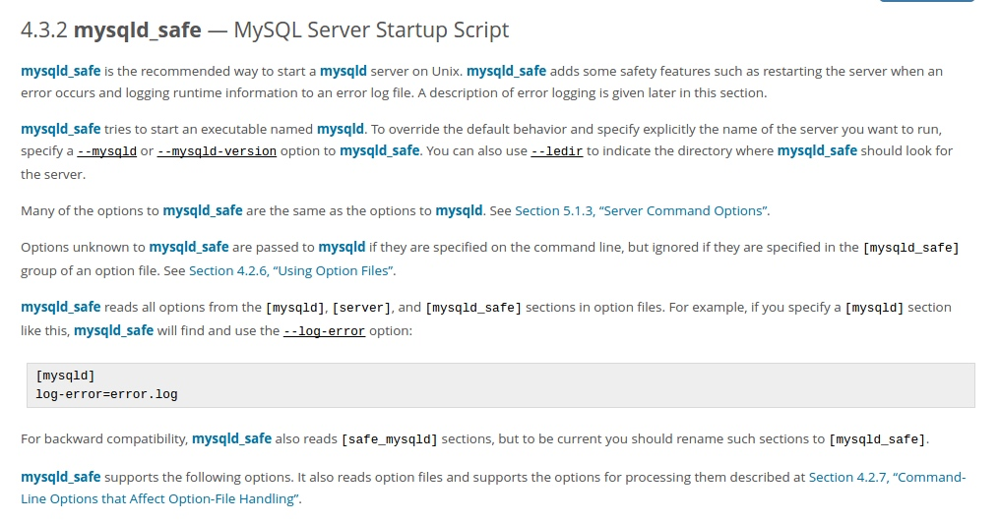

关于mysqld_safe
昨天花了一天时间写了mysql的源码安装，比较蛋疼。其中对于mysqld_safe尤其不理解，因为使用apt-get安装几乎中间不需要什么配置，只需要service mysql start即可，但是源码安装在service之前必须要先启动mysqld_safe。关于这个mysqld_safe今天在官网上找到了.原文戳这里。同时更正一点，使用cmake生成配置文件应该是从5.5就开始的了，我猜测使用cmake和mysqld_safe这一特性应该是从同一版本开始的。因为编译安装太耗费时间我也就不去验证了。以下是对mysqld_safe的翻译。
mysqld_safe是官方推荐的在Unix上运行mysql服务器的方式。mysqld_safe增加了一些安全特性，比如：当发生错误时重启服务器、将运行中的错误信息记录到错误日志。
mysqld_safe会启动一个叫mysqld的可执行文件。如果要查看相关文件并且指定你想要运行的服务器名称，在mysqld_safe后加--mysqld或者--mysqld-version参数（这句话翻译的不是很好，意思就是如果你想查看mysql的pid、error文件可以使用mysqld_safe --mysqld-version查看，如果想要完全重启服务可以使用mysqld_safe -mysqld重新生成pid和error文件，个人的理解是mysqld_safe的作用是生成pid和error文件，并启动mysqld）。
mysqld_safe的很多参数都是和mysqld相同的。
在命令行中，如果指定给mysqld_safe的参数是mysqld_safe没有的，这个参数会传递给mysqld，但是如果参数是在配置文件中的[mysqld_safe]中定义的话，那么直接忽略。
mysqld_safe从配置文件的[mysqld],[server]和[mysqld_safe]节中读取参数。比如：如果你在[mysqld]节中指定以下参数，mysqld_safe会查找并使用--log-error参数：
[mysqld] log-error=error.log
为了向后兼容，mysqld_safe也会从[safe_mysqld]节中读取参数，但是为了统一你最好还是写成[mysqld_safe]
